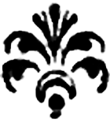

Imitation & création :
sources du théâtre moderne
Cette page web est construite à partir des annexes de la thèse de Céline Fournial, Imitation et création dans le « théâtre moderne » (1550-1650) : la question des cycles d’inspiration.
Pour chaque pièce, la date de composition ou, faute d’information, la date de création, est indiquée entre parenthèses. Les comédies, tragédies et tragi-comédies sont classées par ordre chronologique de composition ou création, lorsque l’état des recherches permet de déterminer ces dates, à défaut elles figurent selon leur date de publication.
La ou les sources principales des pièces sont indiquées, passez la souris sur le symbole ci-dessous, quand il apparaît, pour découvrir la source qui a inspiré la pièce.
 sources antiques
sources antiques
 sources bibliques et religieuses
sources bibliques et religieuses
 sources italiennes
sources italiennes
 sources espagnoles
sources espagnoles
 sources françaises
sources françaises
 autres sources
Cette liste a été élaborée à partir des éditions critiques, des différentes études sur les pièces du corpus et leurs sources citées dans la bibliographie et des recherches de Céline Fournial.